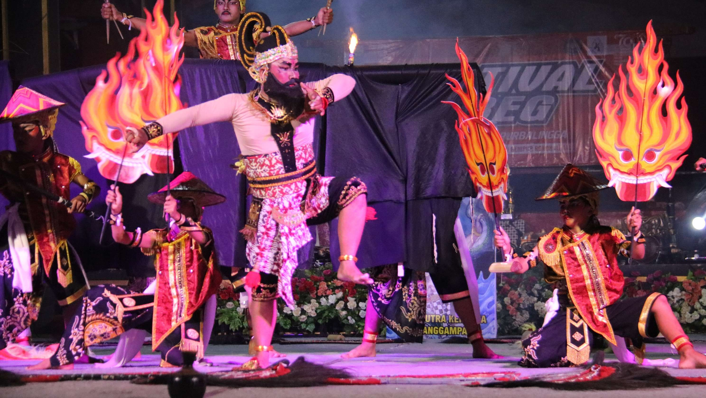

Prakata lan Sejarah Purbalingga
Kabupaten Purbalingga inggih punika salah setunggalin wilayah ing Provinsi Jawa Tengah. Dumunung ing antarane cekungan Pegunungan Serayu lan lereng Gunung Slamet ing sisih lor, Purbalingga nggadhahi kasugihan tradisi, kesenian rakyat, serta warisan sejarah budaya Jawa Banyumasan ingkang khas lan adiluhung.
Sejarah Singkat: Hari Jadi Kabupaten Purbalingga katetepaken tanggal 18 Desember 1730. Sejarah wilayah punika mboten saged dipunpisahaken saking labuh labuh Kyai Arsantaka (Kyai Jamur) lan putranipun, Kyai Yudo Nagaro (Adipati Karo) ingkang katetepaken dados Adipati Kapisan Purbalingga dening Sunan Pakubuwono II. Budaya Purbalingga ngrembaka saking sintesis ajaran lokal, nilai keagamaan, lan karakter msyarakat Banyumasan ingkang blaka suta (cablaka).
Peta Wilayah Kebudayaan
Peta administratif lan persebaran wewengkon kebudayaan Kabupaten Purbalingga:

Daftar 18 Kecamatan
Pilih nama kecamatan ing andhap punika utawi klik penanda ing peta kangge maos sejarah lan deskripsi kebudayaannipun:
Pojok Budaya & Galeri Warisan
Klik foto di galeri untuk melihat animasi terbang mendekat ke layar beserta informasi lengkapnya:


Pojok Lampau & Arsip Tempo Doeloe
Klik arsip foto tempo doeloe untuk menerbangkannya ke layar:


Pusat Referensi & Literatur
Cari bahan bacaan, jurnal sejarah, atau referensi ensiklopedia mengenai kebudayaan dan tokoh Purbalingga: